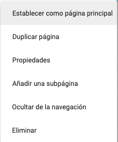

Una vez creado nuestro site, hemos de pensar qué estructura de página queremos darle. Cierto es que, en cualquier momento, podemos crear, eliminar o mover páginas, pero tener claro desde un principio cuál será la estructura básica nos facilitará la labor.
Para acceder al árbol de páginas lo haremos en la parte derecha de la pantalla, tal como vemos en la siguiente imagen.

IMPORTANTE: Picando dos veces sobre el nombre de la página, podemos renombrarla y, picando sobre los tres puntitos que aparecen a la derecha de cada una de dichas páginas podemos realizar las siguientes acciones:

La opción de OCULTAR NAVEGACIÓN es interesante para hacer que una página de nuestro site deje de estar visible a los visitantes, aunque la sigamos teniendo. Esta acción se puede cambiar cuando queramos. Es muy útil cuando estamos creando una nueva página o subpágina y no queremos que se vea hasta que esté finalizada.CREANDO EL ÁRBOL DE PÁGINAS. VÍDEO EXPLICATIVO.
En el siguiente vídeo, podemos comprobar cómo creamos páginas, subpáginas, las renombramos, movemos, etc.
OPCIONES DE MANEJO DE LAS PÁGINAS
IMPORTANTE: Picando dos veces sobre el nombre de la página, podemos renombrarla y, picando sobre los tres puntitos que aparecen a la derecha de cada una de dichas páginas podemos realizar las siguientes acciones:
La opción de OCULTAR NAVEGACIÓN es interesante para hacer que una página de nuestro site deje de estar visible a los visitantes, aunque la sigamos teniendo. Esta acción se puede cambiar cuando queramos. Es muy útil cuando estamos creando una nueva página o subpágina y no queremos que se vea hasta que esté finalizada.